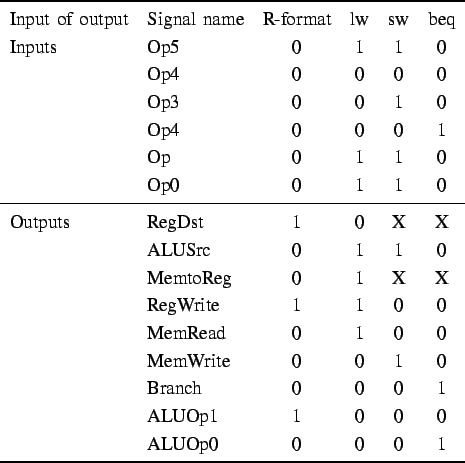
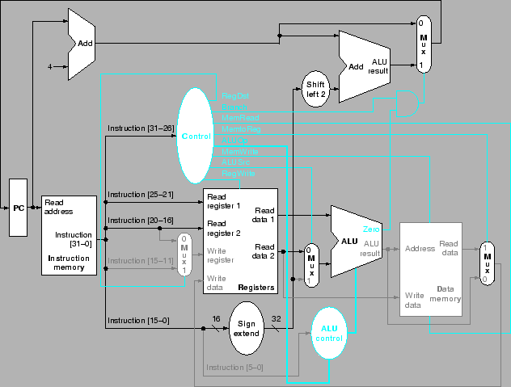

Next: การออกแบบสร้าง jump
Up: การออกแบบสร้างโปรเซสเซอร์พื้นฐาน
Previous: การทำงานของเส้นทางข้อมูล
Contents
Index
จากฟิลด์ของ Opcode ในคำสั่ง เราสามารถเขียน Truth Table สำหรับสร้างวงจรลอจิกของชุดควบคุมได้ โดยใช้ลอจิกต่างๆ มาคำนวณสัญญาณควบคุมต่างๆ จาก Opcode ดังแสดงในรูป 5.23
Figure 5.23:
Truth Table สำหรับสร้างวงจรลอจิกของชุดควบคุม ทำการเทียบฟิลด์ของ Opcode ในคำสั่งกับสัญญาณควบคุมต่างๆ
|  |
Figure 5.24:
การทำงานของเส้นทางข้อมูลสำหรับคำสั่ง beq $t1, $t2, offset
|

|
Vara Varavithya
2006-11-06